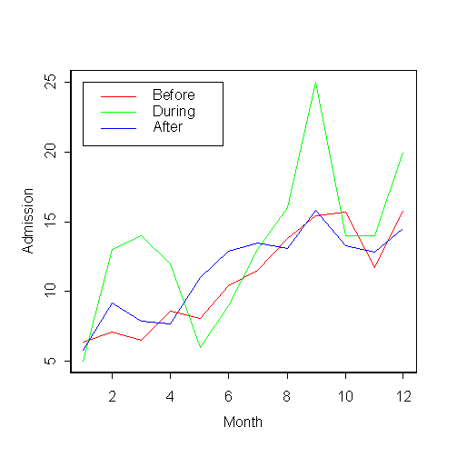

| / Home |
Keywords: two-way analysis of variance
Larsen and Marx (1986) write
In folklore, the full moon is often portrayed as something sinister, a kind of evil force possessing the power to control our behaviour. Over the centuries, many prominent writers and philosophers have shared this belief. Milton, in Paradise Lost, refers to
Demoniac frenzy, moping melancholy
And moon-struck madness.And Othello, after the murder of Desdemona, laments
It is the very error of the moon
She comes more near the earth than she was want
And makes men mad.On a more scholarly level, Sir William Blackstone, the renowned eighteenth centure English barrister, defined a "lunatic" as
one who hath ... lost the use of his reason and who hath lucid intervals, sometimes enjoying his senses and sometimes not, and that frequently depending upon changes of the moon.
The data give the admission rates to the emergency room of a Virginia mental health clinic before, during and after the 12 full moons from August 1971 to July 1972.
| Variable | Description | ||
| Month | Month of year: Aug, Sep, ... Jul | ||
| Moon | Before, During or After the full moon | ||
| Admission | Admission rate (patients/day) | ||
Data File (tab-delimited text)
| Blackman, S., and Catalina, D. (1973). The moon and the emergency room. Perceptual and Motor Skills 37, 624-626. |
| Ovlin, J. F. (1943). Moonlight and nervous disorders. American Journal of Psychiatry 99, 578-584. |
| Larsen, R.J., and Marx, M.L., (1986). An Introduction to Mathematical Statistics and Its Applications 2nd Edition. Prentice-Hall, Englewood Cliffs, New Jersey. Case Study 1.2.3. |
> tapply(Admission,Moon,mean)
After Before During
11.45833 10.91667 13.41667

Call:
aov(formula = Admission ~ Month + Moon, data = fullmoon, na.action =
na.exclude)
Terms:
Month Moon Residuals
Sum of Squares 455.5831 41.5139 127.8194
Deg. of Freedom 11 2 22
Residual standard error: 2.410389
Estimated effects are balanced
Df Sum of Sq Mean Sq F Value Pr(F)
Month 11 455.5831 41.41664 7.128541 0.00005076
Moon 2 41.5139 20.75694 3.572639 0.04533140
Residuals 22 127.8194 5.80997
|
Home - About Us -
Contact Us Copyright © Gordon Smyth |